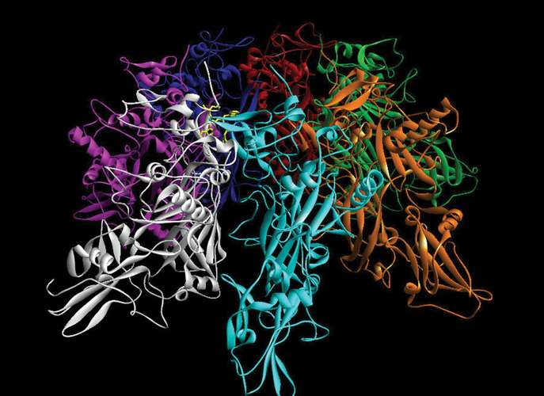
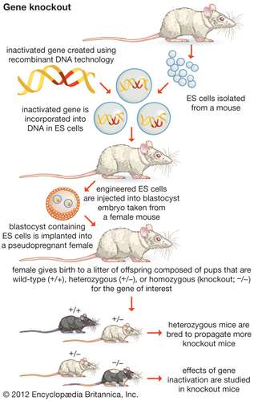

Just as the 19th century can be considered the age of cellular biology, the 20th and 21st centuries were characterized primarily by developments in molecular biology.
By utilizing modern methods of investigation, such as X-ray diffraction and electron microscopy, to explore levels of cellular organization beyond that visible with a light microscope—the ultrastructure of the cell—new concepts of cellular function were produced. As a result, the study of the molecular organization of the cell had tremendous impact on biology during the 20th and 21st centuries. It also led directly to the convergence of many different scientific disciplines in order to acquire a better understanding of life processes.
Technologies such as DNA sequencing and the polymerase chain reaction also were developed, allowing biologists to peer into the genetic blueprints that give rise to organisms. First-generation sequencing technologies emerged in the 1970s and were followed several decades later by so-called next-generation sequencing technologies, which were superior in speed and cost-efficiency. Next-generation sequencing provided researchers with massive amounts of genetic data, typically gigabases in size (1 gigabase = 1,000,000,000 base pairs of DNA). Bioinformatics, which linked biological data with tools and techniques for data analysis, storage, and distribution, became an increasingly important part of biological studies, particularly those involving very large sets of genetic data.
In the 1970s the development of recombinant DNA technology opened the way to genetic engineering, which enabled researchers to recombine nucleic acids and thereby modify organisms’ genetic codes, giving the organisms new abilities or eliminating undesirable traits. Those developments were followed by advances in cloning technologies, which led to the generation in 1996 of Dolly the sheep, the first clone of an adult mammal. Together, recombinant DNA technology and reproductive cloning (the method used to produce a living animal clone) facilitated great progress in the development of genetically modified organisms (GMOs). Such organisms became crucial components of biomedical research, where genetically modified (GM) mice and other animals were developed to model certain human diseases, thereby facilitating the investigation of new therapies and the factors that cause disease. Recombinant DNA technology played a crucial role in the generation of GM crops, including pest-resistant forms of cotton and herbicide-resistant forms of maize (corn) and soybeans.
In the 1990s and early 2000s, researchers worldwide increasingly came together in consortiums and other collaborative groups to accomplish major feats in biology. The first major success of those efforts was the sequencing of the human genome, which was accomplished through the Human Genome Project (HGP). The HGP began in 1990, supported by the U.S. Department of Energy and the National Institutes of Health (NIH). NIH researchers later joined forces with Celera Genomics, a private-sector enterprise, and the project was completed in 2003. Other collaborative projects soon followed, including the International HapMap Project, an outgrowth of the HGP, and the 1000 Genomes Project, which built on data from the HapMap effort.